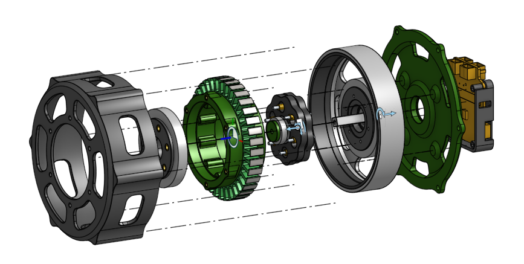

Overview
This is an internal cycloidal actuator with a 9:1 reduction ratio, designed as a compact, high-torque joint module. Unlike a planetary gearbox, the cycloidal stage transmits torque through rolling contact between an eccentric cycloidal disc and a ring of internal pins, giving high reduction in a short axial length with low backlash.
The actuator integrates the motor, cycloidal reduction stage, output bearing, and driver electronics into a single self-contained module, so it can be dropped directly into a joint without external gearing or mounting brackets.
The end goal is to use this actuator as the knee and hip joints of the next version of Grass, giving the robot the torque density and backlash performance needed to jump and turn, which the original brushed-gearmotor drivetrain couldn't support.
Build Progress
Skills Used
Details
Mechanical Design

The actuator is built around an internal cycloidal stage: a ring of pins in a fixed housing, an eccentric-driven cycloidal disc that rolls against them, and an output flange that picks up the disc's counter-rotation through a set of output pins. The motor drives the eccentric shaft directly, so the entire reduction happens in one stage rather than a stacked gear train.
Structural and housing components are designed to be 3D printed in PA12 carbon-fibre reinforced nylon, chosen for its stiffness-to-weight ratio and dimensional stability compared to standard nylon or PLA. The cycloidal disc and rotor, which see the highest contact stresses and need tight tolerances on the eccentric bore and pin profile, are being outsourced to a CNC machining company rather than printed, since the load-bearing rolling contact surfaces need better surface finish and dimensional accuracy than FDM printing can reliably hold.
Manufacturing Plan & Current Status
CAD for the full assembly is complete, including the housing, eccentric shaft, cycloidal discs, output flange, and driver enclosure. The rotor and cycloidal discs have been sent out to a CNC machining company, since these parts carry the tightest tolerances in the assembly and directly determine backlash and rolling smoothness. Every other structural part, including the housing, output flange, and bearing carriers, will be 3D printed in-house out of PA12 CF once the machined parts are back, so fit can be verified before committing to a full print run.
| Component | Process | Material |
|---|---|---|
| Rotor / Eccentric Shaft | CNC Machining (outsourced) | TBD — metal |
| Cycloidal Discs | CNC Machining (outsourced) | TBD — metal |
| Housing & Output Flange | 3D Printing (in-house) | PA12 Carbon Fibre |
| Bearing Carriers / Covers | 3D Printing (in-house) | PA12 Carbon Fibre |
Next steps once the machined parts arrive are a dry fit-check of the pin and disc contact surfaces, followed by printing the remaining housing components and doing a first full assembly.
Log So Far
Going With Internal Cycloidal Over Planetary
An internal cycloidal stage was chosen over a planetary gearbox for the reduction, since it offers a higher single-stage ratio and lower backlash in a shorter axial length, which matters for keeping the joint compact on a robot leg.
Splitting Machined and Printed Parts
Early tolerance studies on printed pin-and-disc contact surfaces showed enough backlash and surface roughness to rule out fully 3D-printed reduction components for a jumping application. The rotor and cycloidal discs were split out to be CNC machined, while the rest of the housing stays 3D printed in PA12 CF to keep cost and lead time down.
Currently Waiting on Machined Parts
CAD is finalized and the rotor and cycloidal discs are currently at the machinist. Next up is a dry fit-check of those parts once they arrive, before printing the rest of the housing and doing a first full assembly.